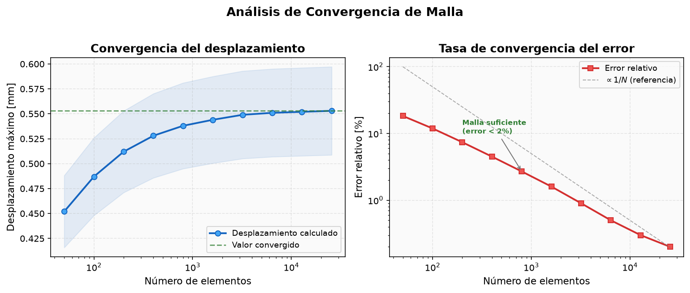
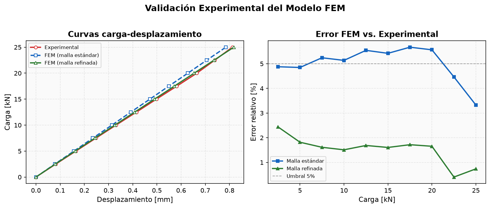

Errores comunes +
Verificación y Validación
la base de la confianza en su resultado.
Agenda de la sesión
Errores comunes
Taxonomía (modelado / discretización / usuario) y los 10 errores más frecuentes con su frecuencia (cap. 5).
Verificación
¿Resolvemos bien las ecuaciones? Convergencia de malla y el índice GCI (cap. 6.2).
Validación
¿Resolvemos las ecuaciones correctas? Métricas MAE, RMSE, MAPE, R² y estrategias sin datos experimentales (cap. 6.3).
Práctica
Convergencia de malla con GCI en la viga + Taller 5: placa con agujero, validación con Kt y sensibilidad.
El costo de no verificar
La verificación y la validación convierten un resultado en una afirmación defendible. Sin ellas, es solo una hipótesis.
Plataforma Sleipner A
Un error en la malla de elementos finitos subestimó los esfuerzos en una celda crítica de concreto. La plataforma se hundió en el Mar del Norte [1].
Error 9 (2%)
"Verifiqué una vez" no es convergencia. Un resultado de una sola malla no prueba nada: el error de discretización es desconocido (cap. 5, Error 9).
Taxonomía de errores en simulación
Todo error cae en una de tres categorías. Clasificar el error es el primer paso para evitarlo.
Modelado
La física del modelo no representa adecuadamente el fenómeno real. Ej.: usar elasticidad lineal donde hay plasticidad.
se resuelve mal el problema
Discretización
La aproximación numérica introduce error: malla insuficiente, tipo de elemento inapropiado, integración.
se aproxima mal la solución
Usuario
Configuración incorrecta del software, unidades inconsistentes, o mala interpretación de los resultados.
se opera mal la herramienta
Los 10 errores más frecuentes
| # | Error | Frecuencia |
|---|---|---|
| 1 | Condiciones de frontera incorrectas | 28% |
| 2 | Mallado inadecuado | 22% |
| 3 | Propiedades de material erróneas | 15% |
| 4 | Tipo de elemento inapropiado | 10% |
| 5 | Contactos mal definidos | 8% |
| 6 | Interpretación errónea de resultados | 7% |
| 7 | Unidades inconsistentes | 5% |
| 8 | Simplificaciones excesivas | 3% |
| 9 | No verificar convergencia | 2% |
| 10 | Ignorar no linealidades relevantes | 1% |
Síntomas y soluciones del top 3

Error 1 · CF incorrectas (28%)
Síntoma: resultados sin sentido (cuerpo rígido). Solución: verifique restricciones; modal con apoyos: si ω₁ ≈ 0 Hz hay un mecanismo.
Error 2 · Mallado inadecuado (22%)
Síntoma: resultados que cambian al refinar. Solución: análisis de convergencia con GCI, mínimo 3 mallas.
Error 3 · Material erróneo (15%)
Síntoma: desplazamientos sistemáticamente altos o bajos. Solución: verifique unidades y trazabilidad del dato.
Error 9 · No verificar convergencia (2%)
El que menos ocurre y el que más daño hace: hoy lo corregimos con el GCI.
Verificación ≠ Validación
Validation: Are we solving the right equations?"P. J. Roache [2] — las dos preguntas de la confianza
| Verificación | Validación | |
|---|---|---|
| Dominio | Matemático–computacional | Físico |
| Comparación contra | Solución analítica, benchmark, MMS | Datos experimentales |
| Pregunta clave | ¿El código produce la solución correcta de las ecuaciones? | ¿Las ecuaciones representan la realidad? |
| Herramientas | Convergencia de malla, MMS, comparación entre códigos | Experimentos controlados, incertidumbre |
Convergencia de malla: el procedimiento
La herramienta más importante de verificación. Cuatro pasos, siempre iguales.
- Genere 3 mallas con razón de refinamiento r ≈ 2 — ej. 500, 2000, 8000 elementos.
- Ejecute el mismo problema en las 3 mallas (misma geometría, material y CF).
- Calcule el GCI (Grid Convergence Index) entre mallas consecutivas.
- Aplique el criterio: GCI < 5% para diseño detallado; GCI < 2% para certificación.
El índice GCI
· F_s = 1.25 — factor de seguridad (3 mallas)
· \(\varepsilon = (f_{fina} - f_{media})/f_{media}\) — cambio relativo de la variable f
· r — razón de refinamiento (≈ 2)
· p — orden del elemento (2 para cuadráticos)

Métricas cuantitativas de validación
No basta la inspección visual: mida el acuerdo entre simulación y experimento.
| Métrica | Fórmula | Interpretación |
|---|---|---|
| MAE | \(MAE = \frac{1}{n}\sum_{i=1}^{n} |y_{sim,i} - y_{exp,i}|\) | Error promedio en unidades de la variable |
| RMSE | \(RMSE = \sqrt{\frac{1}{n}\sum_{i=1}^{n} (y_{sim,i} - y_{exp,i})^{2}}\) | Penaliza más los errores grandes |
| MAPE | \(MAPE = \frac{100}{n}\sum_{i=1}^{n} \left|\frac{y_{sim,i} - y_{exp,i}}{y_{exp,i}}\right|\) | Error porcentual, fácil de interpretar |
| R² | \(R^{2} = 1 - \frac{\sum (y_{exp} - y_{sim})^{2}}{\sum (y_{exp} - \bar{y}_{exp})^{2}}\) | Proporción de varianza explicada; 1.0 = perfecto |
Validación: laboratorio ↔ modelo

Sin datos experimentales
- · Orden de magnitud: solución analítica simplificada — si el FEM da 10 mm y la mano da 2 mm, algo está mal.
- · Comparación entre códigos: el mismo problema en dos solvers.
- · Simetría y casos límite: ¿el modelo respeta las simetrías? ¿tiende al caso límite conocido?
- · Balance de energía: trabajo externo = energía de deformación interna (estático, dentro de tolerancia).
Análisis de sensibilidad
Incluso un modelo validado produce resultados inciertos si los parámetros de entrada son inciertos.
Lineal: sensibilidad directa
Un 5% de variación en E produce ~5% de variación en \(\delta\). Fácil de anticipar y de comunicar.
No lineal: amplificación
En problemas no lineales la sensibilidad puede amplificarse (plasticidad, pandeo, contacto). Un 5% en el límite elástico puede cambiar 30% la carga de colapso.
Plan de trabajo: convergencia de malla
- Geometría — Part → Box: 200 × 20 × 10 mm (la viga de la Sesión 1)
- Análisis — FEM → New Analysis; acero (E=210000 MPa, ν=0.3); Fixed + Force 100 N
- Malla 1 — Gmsh con Maximum element size = 10 mm → ejecutar → registrar δ
- Malla 2 — cambiar a 5 mm → ejecutar → registrar δ
- Malla 3 — cambiar a 2.5 mm → ejecutar → registrar δ
- GCI — calcular a mano con \(r=2,\ p=2,\ F_s=1.25\) y comparar con δ = 0.762 mm
Valores esperados (ya verificados)
| Malla | Elementos aprox. | δmáx (mm) | Error vs analítico |
|---|---|---|---|
| Gruesa · 10 mm | ≈ 500 | 0.778 | +2.1% |
| Media · 5 mm | ≈ 2000 | 0.765 | +0.4% |
| Fina · 2.5 mm | ≈ 8000 | 0.762 | ≈ 0.0% |
Referencia analítica
I = bh³/12 = 1666.7 mm⁴ · σ_máx = Mc/I = 60 MPa
GCI del estudio
· GCI (fina–media) ≈ 0.16%
· GCI (media–gruesa) ≈ 0.70%
· Criterio cap. 6.2: GCI < 5% para diseño detallado — cumplido con holgura.
Calcular el GCI a mano
Con \(r=2\), \(p=2\) y \(F_s=1.25\): \(GCI = 1.25\,|\varepsilon|/3\)
GCI (fina – media)
La malla fina ya es prácticamente independiente de la malla.
GCI (media – gruesa)
Todavía excelente: muy por debajo del 5% de diseño detallado.
Taller 5 — Placa con agujero: GCI + validación
Parte A · Convergencia + GCI
- Placa 200×100×5 mm, agujero d = 20 mm (Sesión 3)
- \(\sigma_{nom} = 10\ \text{MPa}\) · \(F = 5000\ \text{N}\)
- 3 mallas: 10, 5, 2.5 mm con refinamiento local en el agujero
- Reportar \(\sigma_{m\acute{a}x}\) por malla + GCI sobre \(\sigma_{m\acute{a}x}\)
Partes B · C · D
- B · Validación: \(\sigma_{m\acute{a}x}\) vs \(K_t\cdot\sigma_{nom}\) — Peterson: \(K_t \approx 2.5\) para \(d/w = 0.2\) → esperado \(\approx 25\ \text{MPa}\). Calcular error %.
- C · Sensibilidad: variar \(E \pm 10\%\) — \(\sigma\) no cambia (lineal) mientras \(\delta\) sí (\(\propto 1/E\)).
- D · Informe: 4 tablas + conclusiones citando guía (6.2, 6.3, 6.4).
Rúbrica del Taller 5
| Criterio | Qué se evalúa | Puntos |
|---|---|---|
| Modelo FEM | Geometría, material, CF y carga correctos; análisis ejecuta en las 3 mallas | 30 |
| Convergencia + GCI | Tabla de 3 mallas con σmáx, cálculo del GCI y comparación con el criterio < 5% | 30 |
| Validación (Kt) | σmáx vs Kt·σnom ≈ 25 MPa; error % con discusión | 25 |
| Sensibilidad + discusión | E ±10%: σ invariante y δ ∝ 1/E; conclusiones citando la guía (6.2, 6.3, 6.4) | 15 |
Lo que debe quedar hoy
Clasifique el error
Modelado / discretización / usuario. El top 3 (CF, malla, material) es el 65% de los casos.
Verifique con GCI
Tres mallas con r ≈ 2 y GCI < 5% (diseño) o < 2% (certificación).
Valide y explore
Métricas MAE/RMSE/MAPE/R² contra experimentos; sensibilidad a los parámetros inciertos.
Próximos pasos y recursos
Guía de referencia
- Cap. 5 — Errores comunes y cómo evitarlos
- Cap. 6.1 — Verificación vs validación (Roache)
- Cap. 6.2 — Convergencia de malla y GCI
- Cap. 6.3 — Validación y métricas · 6.4 — Sensibilidad
Archivos y notebooks
- ejercicio_paso_a_paso.html — convergencia con GCI
- taller.html — enunciado + rúbrica
- video/guion.md — guion del video asíncrono
- Notebooks: 02_convergencia_malla.ipynb · 03_validacion_modelos.ipynb
[1] B. Jakobsen y F. Rosendahl, "The Sleipner Platform Accident," Structural Engineering International, vol. 4, no. 3, pp. 190–193, 1994. · [2] P. J. Roache, Verification and Validation in Computational Science and Engineering, Hermosa, 1998.